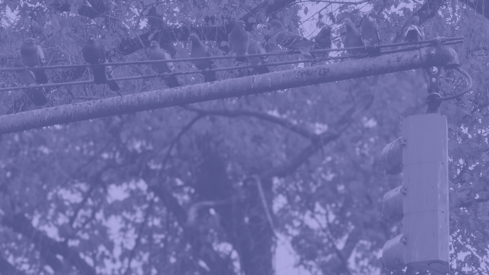

The pigeon heads north and sees a few pigeons waiting up on the tree branches. The birds are chatting up. They just came from Columbus Circle. An elderly man on the south end of the park giving out breadcrumbs, they mention. The pigeon feels conflicted. It may be too late to grab food.